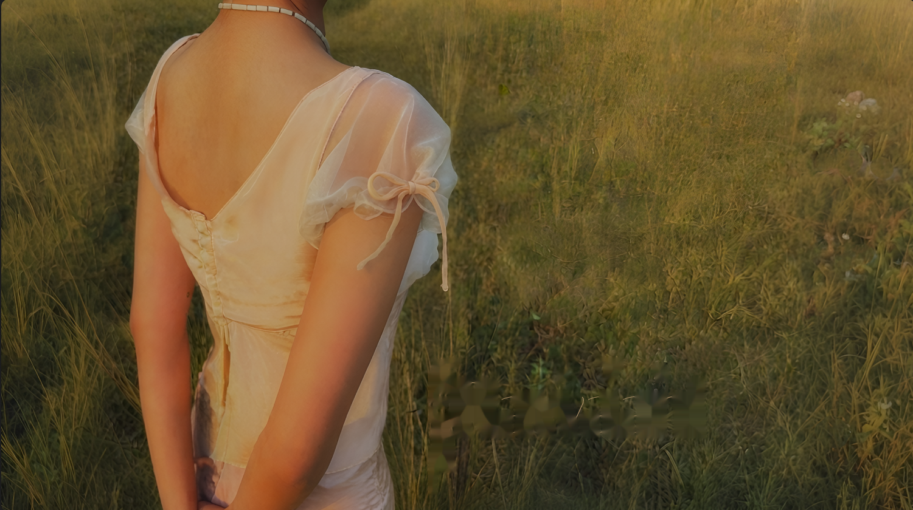
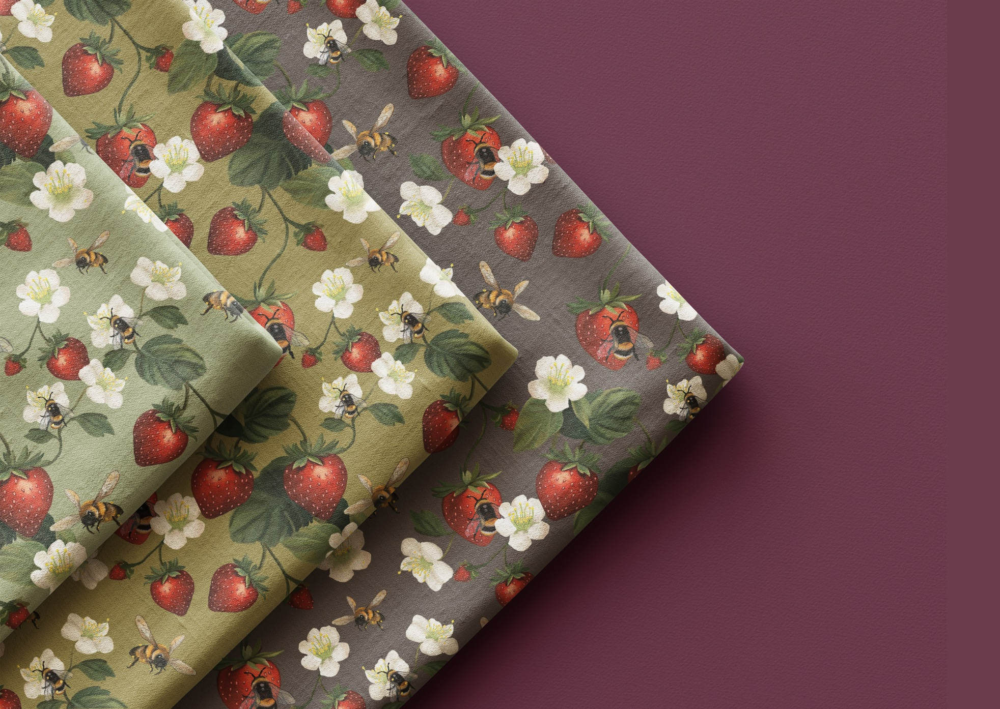
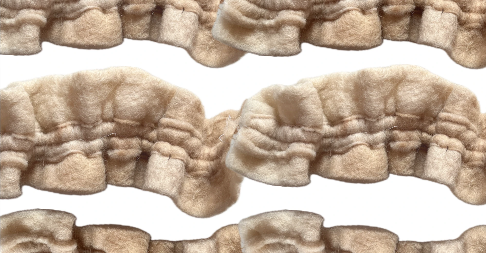
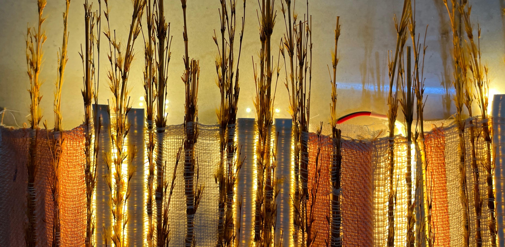
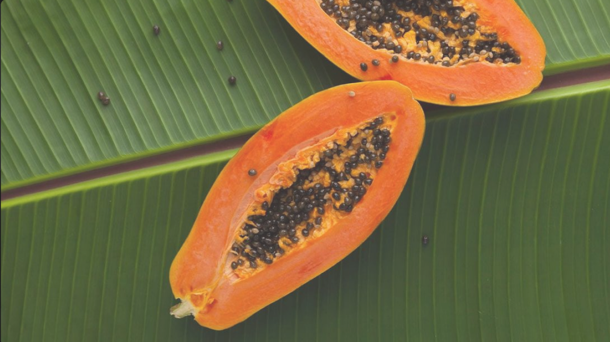
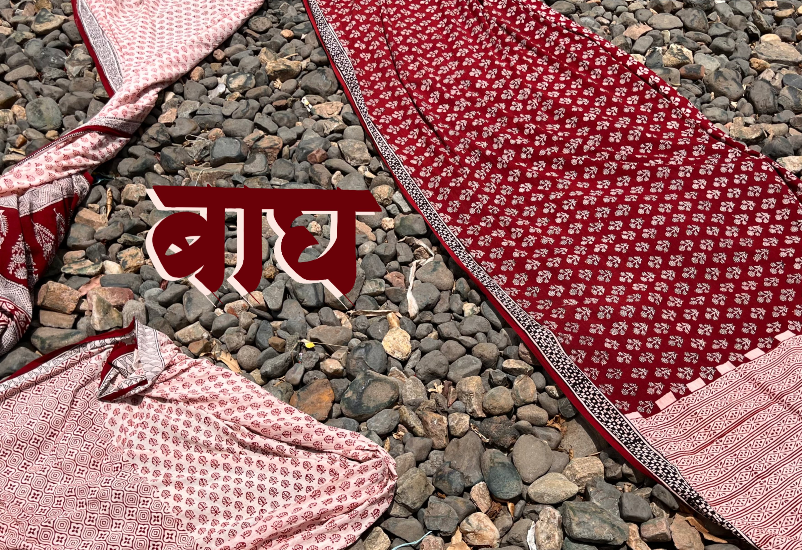
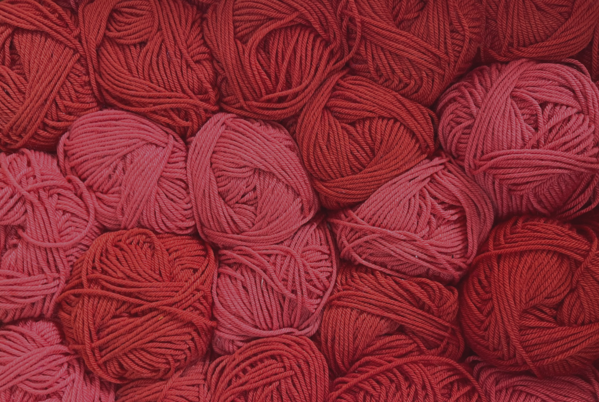
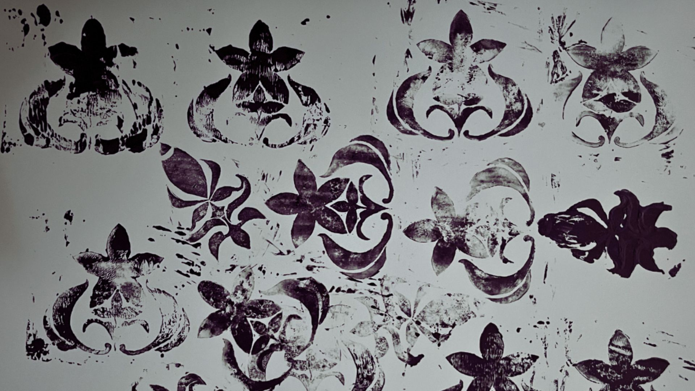
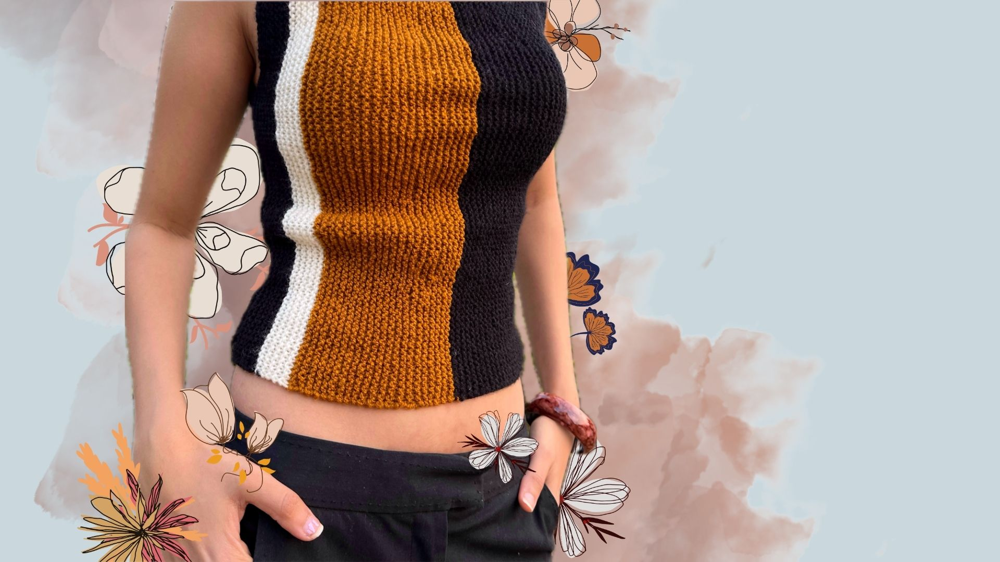

Observe closely
Start with context, material behaviour and the stories already held in a place or practice.
PracticeI drive process-driven experimentation to translate complex concepts into refined design outcomes.
Garments shaped through narrative, proportion, material and wearability.
↗Motif, colour and repeat translated into distinctive textile surfaces.
↗Weaving, knitting and felting explored through sampling and structure.
↗Material cultures understood through fieldwork, process and visual storytelling.
↗Graphic systems built from material observation and visual research.
↗A compilation across apparel, print, craft documentation, weaving, process and design.

Romantic Vintage Ready-To-Wear Collection for SS26.

Contemporary prints inspired by the delicate beauty of berries.

Fabric construction, felting and wool.

Haryana’s local grasses and their role in regional textile and craft heritage.

A fruit-led visual identity shaped through colour, composition and brand thinking.

History, materials and process behind Madhya Pradesh’s Bagh block-printing practice.

A compilation of learning, experimentation and growth across basic and advanced weaving.

A compilation of print explorations, motifs and surface-design processes.

Knitted texture and apparel explored through textile and product design.
( How I work )
Start with context, material behaviour and the stories already held in a place or practice.
Translate research into colour, image, texture and a precise design direction.
Test structure, surface and construction until material and intention meet.
Resolve detail, communication and final form without losing the process behind it.
( About )
My practice moves between fibre, form and image—looking closely at how materials carry memory, how craft holds knowledge, and how clothing can create an emotional connection. I am process-driven, finding as much joy in experimentation, sampling and iteration as in achieving the final result.